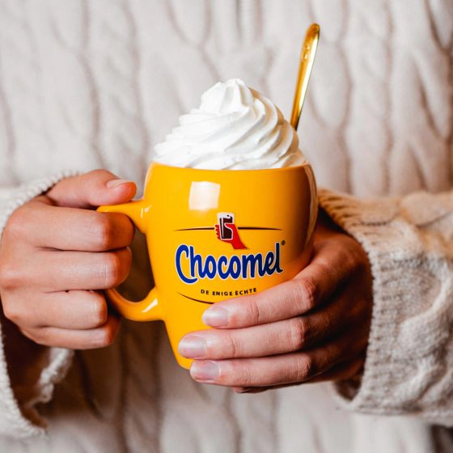
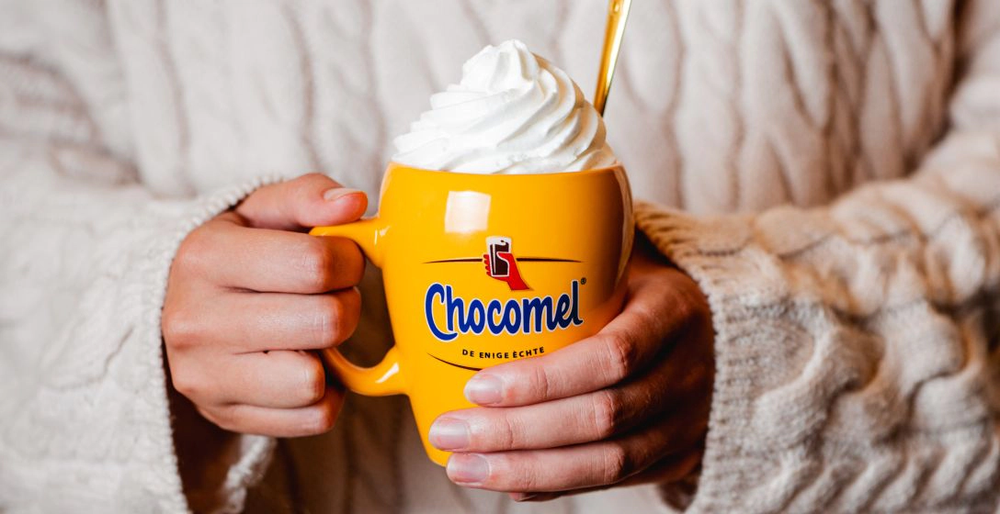
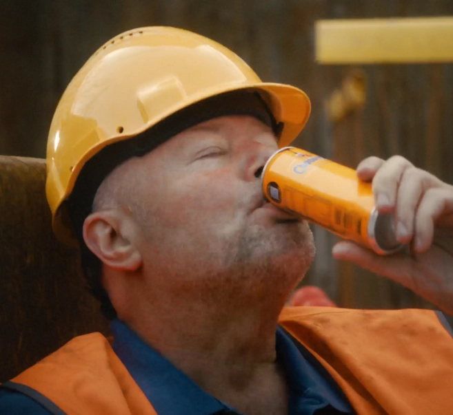
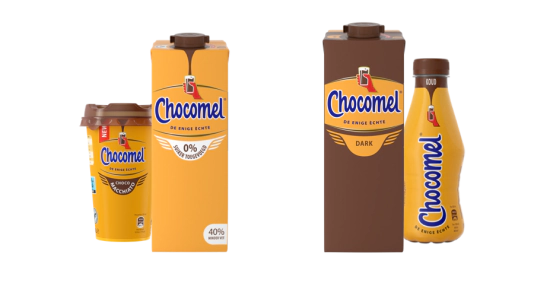

its all good!
When life gives you chocomel
 Voor wie het leven met een flinke scheut imperfectie neemt
Oftewel: iedereen die zelf bepaalt hoe het moet, overal een feestje van maakt en altijd héérlijk lekker ‘volle bak’ voor genieten gaat!
Hier! Hebbie 'er net twee!
Cacao, suiker en romige (koe-, of een plantaardig alternatief voor-) melk: een combo die sowieso op ‘totaal genieten’ uitkomt. Ze noemen Chocomel niet voor niets ‘Carefreeness in A Can’.
Wie de lat te hoog legt, loopt een hoop plezier mis
Het soort plezier waarbij ’t helemaal niet uitmaakt of de omstandigheden nou ’perfect’ zijn of niet. Sterker nog: Alles dat niet per se ‘perfect’ is, geeft de boel nou nét die ‘glans’…
De enige échte ‘glas half vol’ mindset
Stromende regen? Kan je op zich gewoon lachend doorheen. Printer cartridge leeg halverwege je werkstuk over schaarste? Beste voorbeeld ever toch? Een dag waarop niet drie, niet vier, maar honderd dingen fout gaan? Goed moment voor een Chocomel! je hebt ’m verdiend.
Allemaal he-le-maal
All good!
Of je nou een gedoodverfde Classic-liefhebber bent, of liever voor ‘extra puur gaat’, of je je Chocomel liever plantaardig drinkt, of met koemelk, of je nu kiest voor de 0% toegevoegde suiker-, de halfvolle, of de lactose-intolerant variant, en of je nou zweert bij een warme (met of zonder slagroom), of een koude: het zijn allemaal de enige échten. Omdat jullie dat ook zijn!